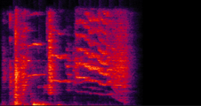

Number of sound sources = 2
| Mixed sound | Ground truth 1 | Ground truth 2 |
|---|---|---|
| SpatialNet | ||
| DeFTMamba |
Dongheon Lee1, and Jung-Woo Choi1
1School of Electrical Engineering, Korea Advanced Institute of Science and Technology (KAIST),
Daejeon, Republic of Korea

| Mixed sound | Ground truth 1 | Ground truth 2 |
|---|---|---|
| SpatialNet | ||
| DeFTMamba |
| Mixed sound | Ground truth 1 | Ground truth 2 | Ground truth 3 |
|---|---|---|---|
 |
|||
| SpatialNet | |||
| DeFTMamba |
| Mixed sound | Ground truth 1 | Ground truth 2 | Ground truth 3 | Ground truth 4 |
|---|---|---|---|---|
 |
 |
|||
| SpatialNet | ||||
| DeFTMamba |
| Mixed sound | Ground truth 1 | Ground truth 2 | Ground truth 3 |
|---|---|---|---|
| SpatialNet | |||
| DeFTMamba |